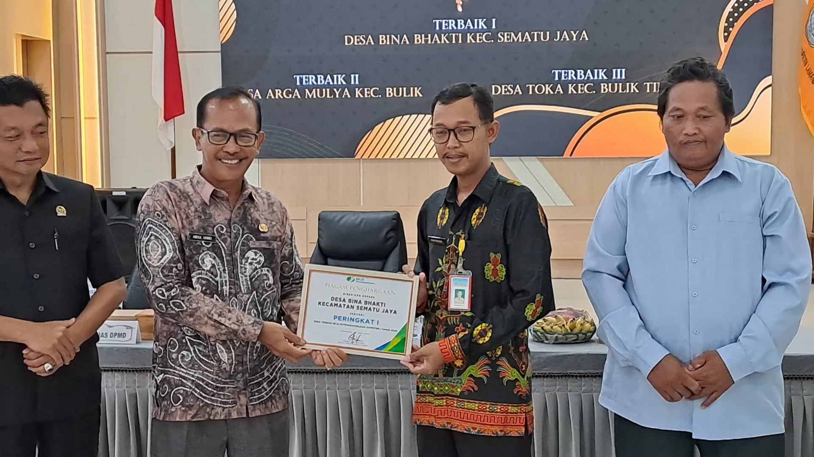
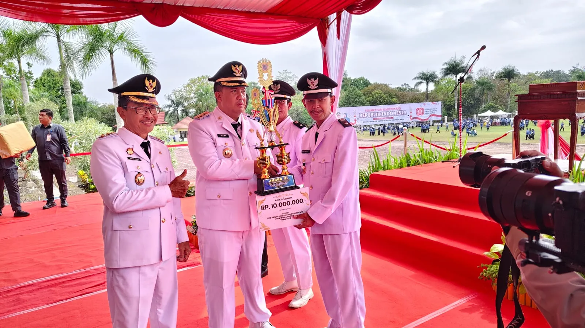

Prestasi merupakan hasil dari kerja keras, kebersamaan, inovasi dan komitmen masyarakat bersama Pemerintah Desa Bina Bhakti dalam membangun desa yang lebih maju.

Desa Bina Bhakti meraih penghargaan Terbaik I Tingkat Kabupaten Lamandau dalam Program Jaminan Sosial Ketenagakerjaan Desa Semester I Tahun 2026.

Prestasi sebagai Juara III Lomba Desa Tingkat Kabupaten Lamandau Tahun 2025 menjadi bukti kemajuan dalam pemerintahan, pelayanan masyarakat dan pembangunan desa.
Desa tercepat dalam realisasi Dana Desa selama 2 tahun berturut-turut di Kabupaten Lamandau.
Capaian Pajak Bumi dan Bangunan mencapai 86,22% dengan nilai Rp142.313.745 tahun 2025.
Gapoktan Makmur Sejahtera berhasil merealisasikan bantuan pupuk BPDPKS sebanyak 280 Ton tahun 2025.
Bukit Batu Galugur ditetapkan sebagai Desa Wisata klasifikasi perintisan melalui SK Bupati Lamandau Tahun 2025.
Setiap penghargaan menjadi motivasi bagi Desa Bina Bhakti untuk terus berinovasi, melayani masyarakat dan membangun desa yang lebih baik.